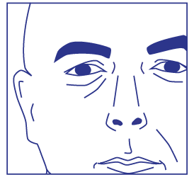
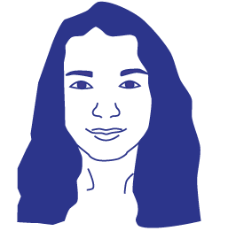

drawing and composition
In this subject will be carry out conceptual, plastic and graphic experimentations. You will acquire visual composition strategies; formal and conceptual analysis skills between drawing in contemporary art and contemporary illustration; and transformation and fusion capabilities between analogue and digital recording. The final evaluation is divided in two components: Continuous Assessment (25%) - focus on factors inherent to the student's participation - and Pratical Work's Assessment (75%) - focus on factors inherent to the development of 4 exercises. |
|
|---|---|
| WORK | TEACHERS |
 |
 |
 |
|
| Reinterpretation of a photographic image through digital drawing | Illustration worked graphically using digital collage techniques within the scope of the project Cogumelos do "Prado ao Prato" |
|  |  |
| Valdemar Mendes | Ana Catarina Parente |
| uc46732@uc.pt | aparente@uc.pt |